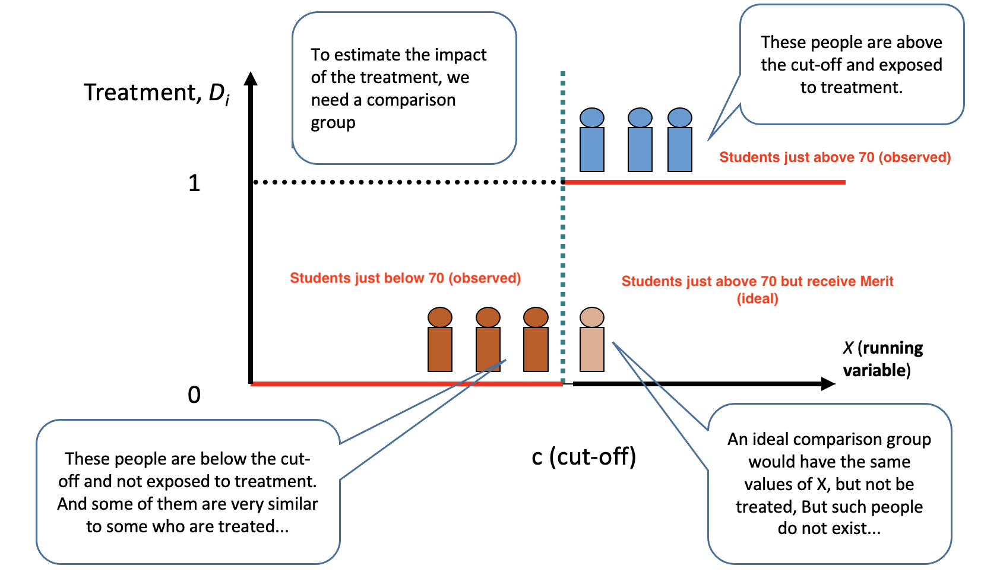
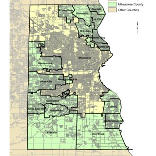

Class 18 Regression Discontinuity Design
1 Regression Discontinuity Design
1.1 What is an RDD
A regression discontinuity design (RDD) is a quasi-experimental design that aims to determine the causal effects of interventions by assigning a cutoff or threshold above or below which an intervention is assigned.
It was invented by educational psychology1 and generalized by economists to economics and business fields.
1.2 Visual Illustration of RDD

1.3 Visual Illustration of RDD: An Example of Distinction on Salary
Question: What is the causal effect of a Distinction honor on a student’s future salary?

1.4 When to Use an RDD
- An RDD arises when treatment is assigned based on whether an underlying continuous score variable crosses a cutoff.
- The characteristic is often referred to as the running variable.
- AND the characteristic cannot be perfectly manipulated by individuals
- We should only focus on individuals in the neighborhood of the cutoff point.
- We can only estimate the local treatment effects from an RDD study.
1.5 Why RDD Gives Causal Effects?
Because the “running variable” cannot be perfectly controlled by the individuals around the cutoff point, it’s as if the treatment was randomly assigned in the neighborhood of cutoff.
At the same time, individuals on either side of the cut-off should be very similar to each other, such that there should be no systematic differences across the treatment and control group other than the treatment.
With the treatment being the only discontinuity at this threshold, a discontinuous jump in the outcome of interest at the threshold is the treatment effect.
2 Steps of RDD Analyses
2.1 Step 1: Select Sample of Analysis
- Determine the cutoff-point and select the subset of individuals near the cut-off point
- e.g., filter out students with average scores between 69 and 70
- There is no econometric requirement on the “near”; however, we face a trade-off between external validity and internal validity:
- External validity: If we have a narrower subset of individuals, we have a smaller subset of subjects which may not be representative of remaining individuals.
- Internal validity: If we have a broader subset of individuals, it is more likely the control group and treatment group are less likely to be “as-if randomized”.
- In practice, we may need to run a set of different neighborhood bands as robustness checks.
2.2 Step 2: Examine Continuity of Observed Characteristics
- Examine if the observed characteristics of the treatment group and control group are continuous at the cut-off point.
- The idea is similar to “randomization check” in the Step 5 of an RCT.
2.3 Step 3: Analysis
- Regress the outcome variable on the treatment indicator to obtain the statistical significance.
- In R, there is also a package
rddtoolswhich can help us estimate an RDD model.
- In R, there is also a package
3 RDD in R
3.1 Causal Impact of Distinction on Salaries
It is important to understand the causal impact of degree honors on students’ future salaries and other outcomes.
Can we get causal inference from simple linear regression?2
\[ Salary_i = \beta_0 + \beta_1 Distinction_i + X\beta + \epsilon_i \]
- No, because there is severe omitted variable bias. Confounding factors may include a person’s ability, IQ, persistence, etc. These confounding factors are correlated with \(Disinction_i\) and also affects a person’s future salary. Not controlling these factors will cause omitted variable bias.
3.2 RCT, IV or DID?
Since omitted variable bias prevents us from obtaining causal inference, we need to find another causal inference tool to overcome the challenge.
How about
- RCT
- Instrumental Variable
- Difference-in-Differences
Fortunately, we can use regression discontinuity design.
3.3 Dataset for RDD
To run RDD, we need to select students with very similar scores due to the tradeoff between internal validity and external validity.
- In the selected dataset, scores range from 69.07 to 72.93
pacman::p_load(dplyr)
data_rdd <- read.csv('https://www.dropbox.com/s/4f0zaqqkzo0at5o/data_rdd.csv?dl=1')
head(data_rdd,5)| student_id | salary | score | experience |
|---|---|---|---|
| 1 | 46.41270 | 69.06849 | 3.872425 |
| 2 | 47.55037 | 69.15068 | 3.236511 |
| 3 | 46.07215 | 69.23288 | 3.202071 |
| 4 | 44.21388 | 69.31507 | 3.280689 |
| 5 | 44.35247 | 69.39726 | 3.548198 |
3.4 Data Wrangling
To use RDD, we need to generate the treatment variable \(treated\), which equals 1 if a student receives the treatment and 0 otherwise.
- The treatment in an RDD is in spirit similar to that of an RCT, only that the treatment is assigned by nature (hence the name “natural experiment”)
3.5 RDD Analysis Using R
pacman::p_load(modelsummary,fixest)
rdd_result <- feols(
fml = salary ~ treated,
data = data_rdd
)
modelsummary(rdd_result,stars = TRUE)| Model 1 | |
|---|---|
| (Intercept) | 46.143*** |
| (0.479) | |
| treated | 2.257*** |
| (0.553) | |
| Num.Obs. | 48 |
| R2 | 0.266 |
| R2 Adj. | 0.250 |
| RMSE | 1.62 |
| Std.Errors | IID |
| + p < 0.1, * p < 0.05, ** p < 0.01, *** p < 0.001 |
3.6 Variant 1: Regression Discontinuity in Time
- An event or treatment occurred at a point in time. Meanwhile, the treatment affected all individuals.
- Because all individuals were affected, there were no control group and we could not do DiD analyses.
- However, if we can justify, seasonality is not strong within certain time window before and after the event, then we can do a regression discontinuity in time design (RDiT), as follows:
\[ Outcome_{i, t}=\alpha+\beta_{1} Post_{i}+X\beta + \mu_{i, t} \]
- As we learned in DiD lecture, \(\beta_1\) includes both (1) the treatment effect, and (2) seasonality
- If the time window is short, say a few weeks before and after, it is likely seasonality effect is null, and we can claim \(\beta_1\) measures the causal effect of the event.
3.7 Variant 2: Spatial Regression Discontinuity
Some new policies/events may be region specific. For instance, In the US, each state has their independent laws and regulations, so a state’s new policy only affects that state but not other states.
Residents near the same border should be similar in their characteristics, but only one side of the border receives the treatment.
- As-if a randomized controlled trial
3.8 Variant 2: Spatial Regression Discontinuity
Then we can compare the outcome of the treated residents and control residents near the border. Hence, spatial regression discontinuity is sometimes called border strategy.
Refer to this paper for a comprehensive description of the topic.

3.9 After-class Reading
- (recommended) Quasi-experiment (Econometrics with R)